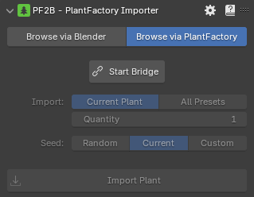
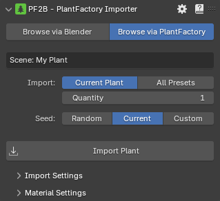
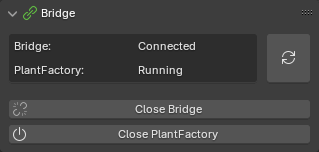
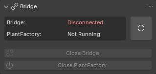
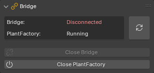

Browse via PlantFactory¶
In this mode, PF2B connects Blender to a running instance of PlantFactory, enabling you to work on plant designs in PlantFactory and seamlessly import them into Blender for testing or use without needing to close PlantFactory.

- Start Bridge: launch the PF2B Bridge along with PlantFactory that lets you import plants from PlantFactory.
Once the bridge has started, the interface will look like this:

General Settings¶
At the top, the scene or plant name is displayed (shown as My Plant in the example).
- Import:
- Current Plant
- All Presets: Import all available preset variations for the selected plant. When enabled, the number of presets will be displayed below.
- Quantity
- Seed:
- Random: Generates a new seed for the import. NOTE: this updates the seed of your current plant.
- Current: Keeps the current seed of your plant.
- Custom
- Import Plant: Starts importing the selected plant.
Bridge¶
Below the main PF2B panel is the Bridge panel, which displays information about the bridge status.



- : Check Bridge status.
- Close Bridge: Closes the PF2B Bridge between Blender and PlantFactory. To import plants again, you will need to restart the bridge along with a new instance of PlantFactory.
- Close PlantFactory: Force close all PlantFactory instances.
Tips¶
- Use the Setup PlantFactory Shortcuts utility to make PlantFactory's navigation shortcuts more familiar. It sets Orbit, Pan, and Zoom to match Blender’s keybindings.